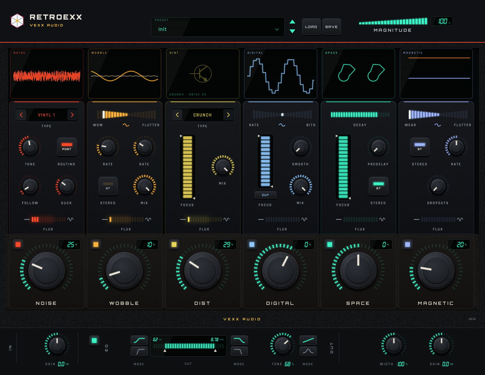
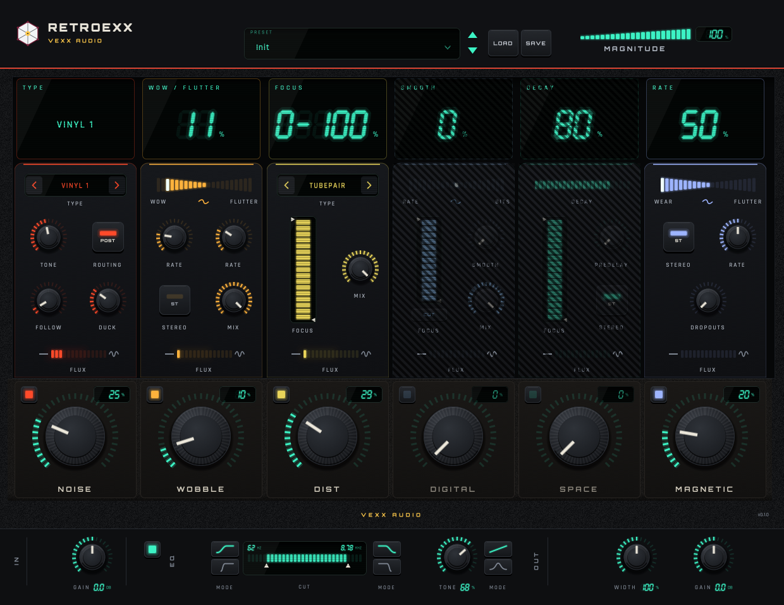

Vexx Audio
Character, noise and space.
Retroexx is a character, noise and space processor for macOS in AU and VST3. Six modules in series, a master strip, and an interface that reports itself.
Download 0.1.0 for macOS Source on GitHub
12 MB. Universal, Apple Silicon and Intel, macOS 12 or newer. AU, VST3 and a standalone app.
Unzip, double click Install.command, done.

What it does
Six modules in series across a mix or an instrument, then a master strip: cut filters, tone, stereo width and gain. Each module has its own Amount and Enable, and the MAGNITUDE control in the header scales all six macros at once.
- Host parameters
- 58
- Latency
- 64 samples
- Formats
- AU and VST3
- Factory presets
- 10
Six modules
The noise is synthesised here, with our own random generators and filters. The textures are drawn in code and the presets are original: the plugin ships no third-party assets.
| Module | What it does | Controls |
|---|---|---|
| NOISE | 16 synthesised noise types: vinyl, tape, cassette, hum, surface | Type, Amount, Tone, Follow, Duck, routing |
| WOBBLE | Wow and flutter on a fractional delay line, with two LFOs | Amount, WOW⇄FLUTTER, Rate, Mix |
| MAGNETIC | Tape wear: amplitude modulation and dropouts | Amount, WEAR⇄FLUTTER, Rate, Dropouts, Stereo |
| DIST | Six saturation stages: tubes, transformer, transistor, clipping | Type, Amount, Mix, filters |
| DIGITAL | Bit crush and sample-rate reduction with antialiasing | Amount, RATE⇄BITS, Smooth, Mix, filters |
| SPACE | A 12-resonator bank, four allpass stages and a pre-delay | Amount, Decay, Dampen/Soften, Pre-delay |
| MASTER | Soft and hard cut filters, tone, stereo width and gain | CUT, TONE, WIDTH, IN/OUT |
The interface reports itself
Hovering a module column turns its screen into a trip computer: the name of the control under the mouse and its value in italic seven-segment digits, with the unit.
With no hover it goes back to the module name and a live visualiser. NOISE shows a min/max oscilloscope, SPACE two rings of L/R energy, MAGNETIC the output/input gain of each channel. Every visualiser is driven by the audio the module is producing.

Current release
Version 0.1 is the first release: six modules, the master strip and the full host surface of 58 parameters, with ten factory presets and a state format of its own. It ships as AU, VST3 and a standalone app, universal for Apple Silicon and Intel, macOS 12 or newer.
It just works. Load it and play.
The build is signed ad hoc, not notarized, because notarization needs a paid Apple Developer account. macOS says "unidentified developer" once: right click, Open. The README has the details.
Retroexx is free to use and its source is open. If something does not behave as documented, open an issue.
Build it
macOS on Apple Silicon, CMake 3.22 or newer and the Xcode toolchain. The core downloads nothing; the plugin fetches JUCE 8.0.13 the first time.
cmake -S . -B build
cmake --build build -j8
ctest --test-dir build # 17 tests, no JUCE
cmake -S . -B build-juce -DRTXX_WITH_JUCE=ON
cmake --build build-juce -j8
ctest --test-dir build-juce # 19 tests, with JUCE
If your cmake is the Homebrew one (x86_64), the AU is built for the wrong
architecture and a native auval will not load it. Use a native arm64 cmake, or pass
-DCMAKE_OSX_ARCHITECTURES=arm64.